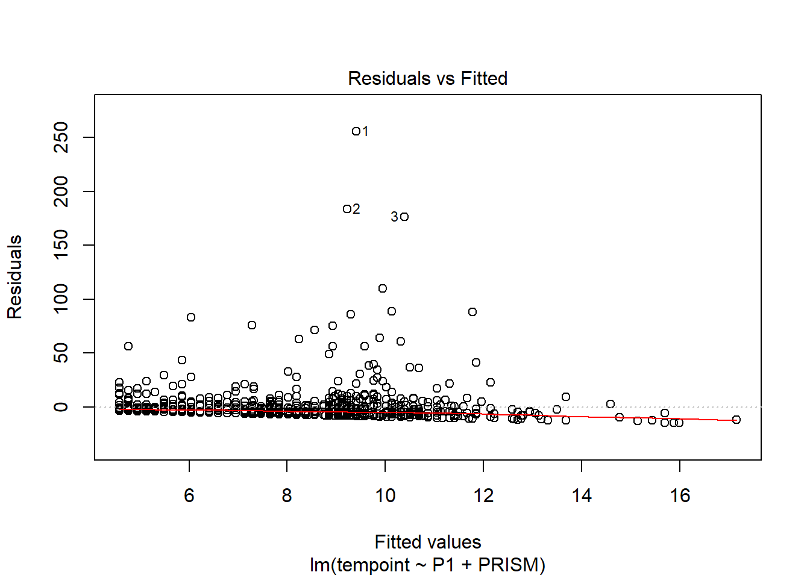
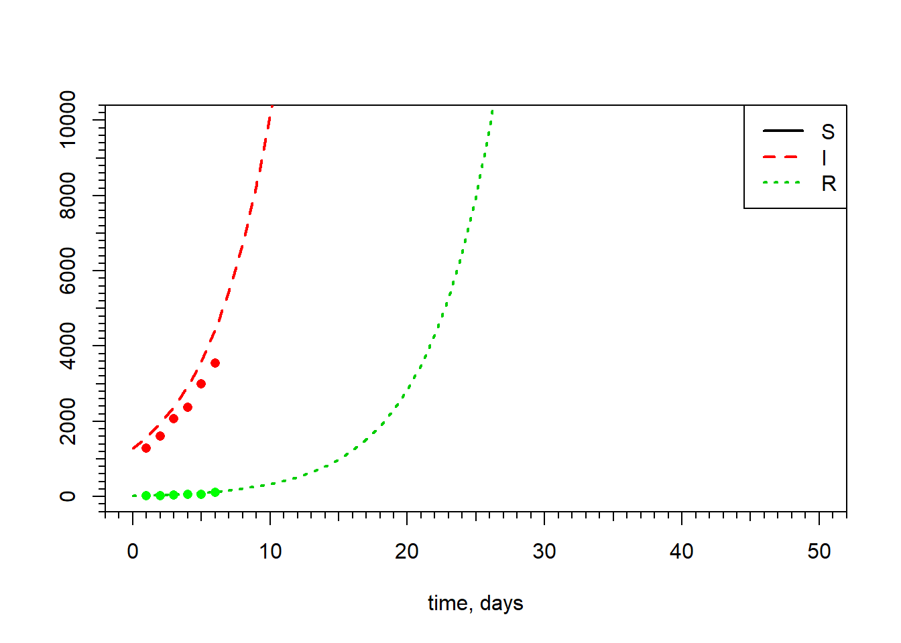
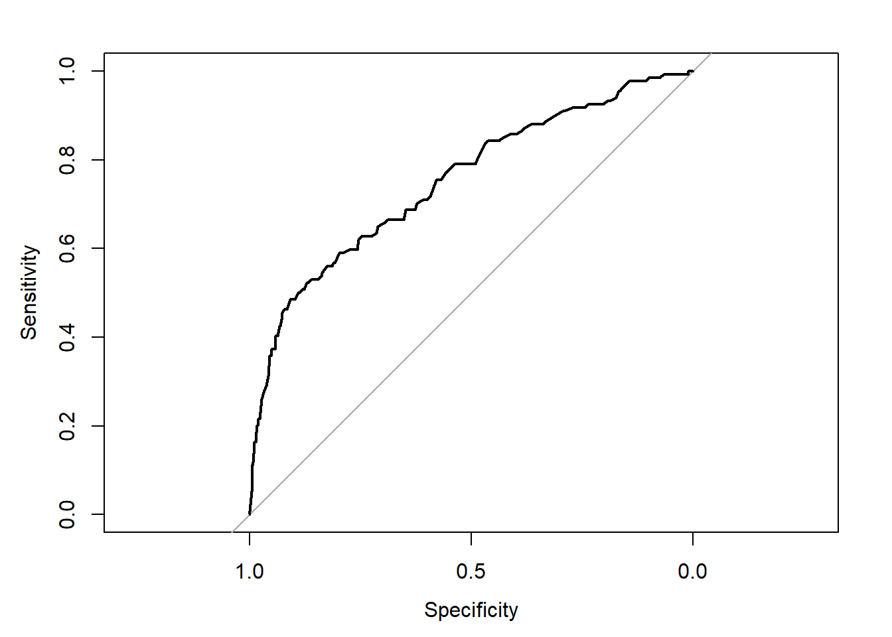

4.1 Lesson 1
2020-02-04
This exercise was done as described by: https://machinelearningmastery.com/machine-learning-in-r-step-by-step/
but using a data set from: https://archive.ics.uci.edu/ml/datasets/Breast+Cancer+Coimbra#
Read the data
Factor variable Classification
NOTE: in order to use the caret packages in all its’ capabilities you must do install.packages("caret", dependencies = T)
create a validation dataset and use the remaing for training
## Loading required package: lattice## Loading required package: ggplot2# create a list of 80% of the rows in the original dataset we can use for training
validation_index <- createDataPartition(dataset$Classification, p=0.80, list=FALSE)
# select 20% of the data for validation
validation <- dataset[-validation_index,]
# use the remaining 80% of data to training and testing the models
dataset <- dataset[validation_index,]dimensions of the new dataset
## [1] 94 10list types for each attribute
## Age BMI Glucose Insulin HOMA
## "integer" "numeric" "integer" "numeric" "numeric"
## Leptin Adiponectin Resistin MCP.1 Classification
## "numeric" "numeric" "numeric" "numeric" "factor"take a peek at the first 5 rows of the data
## Age BMI Glucose Insulin HOMA Leptin Adiponectin Resistin
## 1 48 23.50000 70 2.707 0.4674087 8.8071 9.702400 7.99585
## 2 83 20.69049 92 3.115 0.7068973 8.8438 5.429285 4.06405
## 3 82 23.12467 91 4.498 1.0096511 17.9393 22.432040 9.27715
## 4 68 21.36752 77 3.226 0.6127249 9.8827 7.169560 12.76600
## 6 49 22.85446 92 3.226 0.7320869 6.8317 13.679750 10.31760
## 7 89 22.70000 77 4.690 0.8907873 6.9640 5.589865 12.93610
## MCP.1 Classification
## 1 417.114 1
## 2 468.786 1
## 3 554.697 1
## 4 928.220 1
## 6 530.410 1
## 7 1256.083 1list the levels for the class
## [1] "1" "2"summarize the class distribution
percentage <- prop.table(table(dataset$Classification)) * 100
cbind(freq=table(dataset$Classification), percentage=percentage)## freq percentage
## 1 42 44.68085
## 2 52 55.31915summarize attribute distributions
## Age BMI Glucose Insulin
## Min. :24.0 Min. :18.37 Min. : 60.00 Min. : 2.432
## 1st Qu.:45.0 1st Qu.:23.19 1st Qu.: 86.00 1st Qu.: 4.436
## Median :57.5 Median :28.51 Median : 92.00 Median : 5.925
## Mean :57.4 Mean :27.97 Mean : 96.03 Mean : 9.934
## 3rd Qu.:69.0 3rd Qu.:31.59 3rd Qu.:101.75 3rd Qu.:10.888
## Max. :89.0 Max. :38.58 Max. :196.00 Max. :58.460
## HOMA Leptin Adiponectin Resistin
## Min. : 0.4674 Min. : 4.311 Min. : 1.656 Min. : 3.210
## 1st Qu.: 1.0088 1st Qu.:12.208 1st Qu.: 5.644 1st Qu.: 6.745
## Median : 1.3809 Median :21.783 Median : 8.262 Median :11.345
## Mean : 2.5703 Mean :27.985 Mean : 9.684 Mean :14.753
## 3rd Qu.: 2.6326 3rd Qu.:39.788 3rd Qu.:11.439 3rd Qu.:18.156
## Max. :25.0503 Max. :90.280 Max. :36.060 Max. :82.100
## MCP.1 Classification
## Min. : 90.09 1:42
## 1st Qu.: 268.54 2:52
## Median : 476.08
## Mean : 529.46
## 3rd Qu.: 691.07
## Max. :1698.44split input and output
boxplot for each attribute on one image

barplot for class breakdown
scatterplot matrix
scales <- list(x=list(relation="free"), y=list(relation="free"))
featurePlot(x=x, y=y, plot="ellipse")
box and whisker plots for each attribute
scales <- list(x=list(relation="free"), y=list(relation="free"))
featurePlot(x=x, y=y, plot="box", scales=scales)
density plots for each attribute by class value
scales <- list(x=list(relation="free"), y=list(relation="free"))
featurePlot(x=x, y=y, plot="density", scales=scales)
Run algorithms using 10-fold cross validation
- linear algorithms
set.seed(7)
fit.lda <- train(Classification~., data=dataset, method="lda", metric=metric, trControl=control)- nonlinear algorithms CART
set.seed(7)
fit.cart <- train(Classification~., data=dataset, method="rpart", metric=metric, trControl=control)kNN
set.seed(7)
fit.knn <- train(Classification~., data=dataset, method="knn", metric=metric, trControl=control)- advanced algorithms SVM
set.seed(7)
fit.svm <- train(Classification~., data=dataset, method="svmRadial", metric=metric, trControl=control)Random Forest
set.seed(7)
fit.rf <- train(Classification~., data=dataset, method="rf", metric=metric, trControl=control)summarize accuracy of models
results <- resamples(list(lda=fit.lda, cart=fit.cart, knn=fit.knn, svm=fit.svm, rf=fit.rf))
summary(results)##
## Call:
## summary.resamples(object = results)
##
## Models: lda, cart, knn, svm, rf
## Number of resamples: 10
##
## Accuracy
## Min. 1st Qu. Median Mean 3rd Qu. Max. NA's
## lda 0.4444444 0.4583333 0.7333333 0.7077778 0.8888889 1.0000000 0
## cart 0.3333333 0.6750000 0.7777778 0.7025253 0.7777778 0.8000000 0
## knn 0.2222222 0.4722222 0.6515152 0.5625253 0.6666667 0.7000000 0
## svm 0.5555556 0.6666667 0.7388889 0.7207071 0.7944444 0.8888889 0
## rf 0.3333333 0.7068182 0.7888889 0.7560606 0.8888889 0.8888889 0
##
## Kappa
## Min. 1st Qu. Median Mean 3rd Qu. Max. NA's
## lda -0.1538462 -0.07684530 0.4707317 0.41063067 0.7776735 1.0000000 0
## cart -0.3500000 0.30270270 0.5263158 0.38642812 0.5500000 0.6000000 0
## knn -0.6153846 -0.06001284 0.2558248 0.09919547 0.3330206 0.4000000 0
## svm 0.1000000 0.31613508 0.4631579 0.43029648 0.5815789 0.7804878 0
## rf -0.4210526 0.40526316 0.5708502 0.49488299 0.7692308 0.7804878 0compare accuracy of models

summarize Best Model
## Random Forest
##
## 94 samples
## 9 predictor
## 2 classes: '1', '2'
##
## No pre-processing
## Resampling: Cross-Validated (10 fold)
## Summary of sample sizes: 85, 85, 83, 84, 84, 85, ...
## Resampling results across tuning parameters:
##
## mtry Accuracy Kappa
## 2 0.7116162 0.4152202
## 5 0.7560606 0.4948830
## 9 0.7538384 0.4924010
##
## Accuracy was used to select the optimal model using the largest value.
## The final value used for the model was mtry = 5.estimate skill of LDA on the validation dataset
## Confusion Matrix and Statistics
##
## Reference
## Prediction 1 2
## 1 6 2
## 2 4 10
##
## Accuracy : 0.7273
## 95% CI : (0.4978, 0.8927)
## No Information Rate : 0.5455
## P-Value [Acc > NIR] : 0.06495
##
## Kappa : 0.4407
##
## Mcnemar's Test P-Value : 0.68309
##
## Sensitivity : 0.6000
## Specificity : 0.8333
## Pos Pred Value : 0.7500
## Neg Pred Value : 0.7143
## Prevalence : 0.4545
## Detection Rate : 0.2727
## Detection Prevalence : 0.3636
## Balanced Accuracy : 0.7167
##
## 'Positive' Class : 1
## In this post you discovered step-by-step how to complete your first machine learning project in R